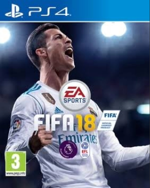
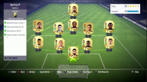
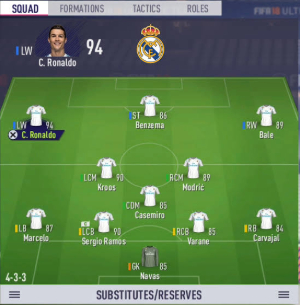
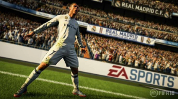

O FIFA 18 foi o vigésimo quinto jogo da série FIFA desenvolvido pela EA Sports que foi lançado globalmente no dia 29 de setembro de 2017. É na minha opinião o melhor FIFA de todos os já desenvolvidos No dia 29 de maio de 2018 o jogo ganhou um pacote de atualização para o Mundial de 2018 uma novidade de que gostei bastante.
O FIFA 18 possuia uma combinação de recursos e funcionalidades que o fazem ser o meu favorito: a tecnologia de animação Real Motion fazia com que o jogo fosse fluído e com excelentes gráficos para a época. As equipas eram fantásticas, causando nostalgia em todos os grandes fãs de futebol como eu. A banda sonora era incrível e melhorava ainda mais a experiência do jogo. Também os estilos de jogo das equipas(que imitava as táticas reais dos clubes) faziam com que o jogo se assemelhasse bastante à realidade e a introdução das substituições sugeridas foram também uma excelente novidade. Todos estes fatores tornaram o FIFA 18 absolutamente memorável para todos os fãs de futebol ao redor do mundo!



